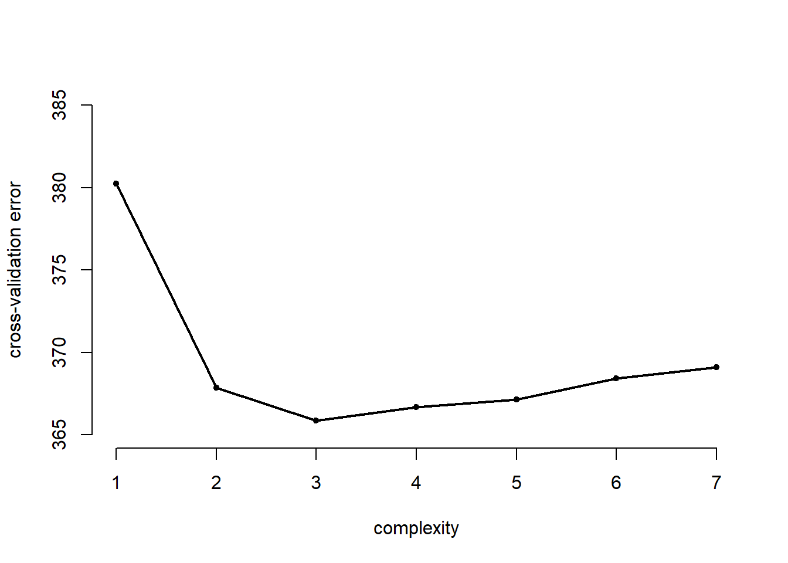
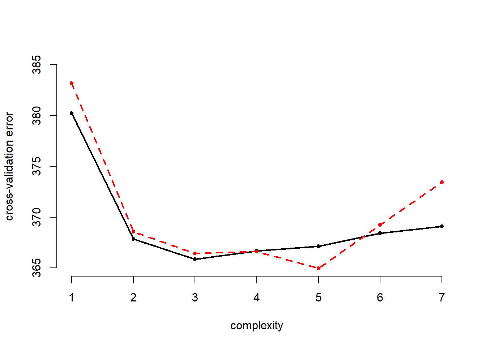

We start by clearing our workspace.
# clear workspace
rm( list = ls() )We use a subset of last weeks non-western immigrants data set (the version for this week includes men only). We can use the head() function to have a quick glance at the data. Download the data here
The codebook is:
| Variable Name | Description |
|---|---|
| IMMBRIT | Out of every 100 people in Britain, how many do you think are immigrants from Non-western countries? |
| over.estimate | 1 if estimate is higher than 10.7%. |
| RAge | Age of respondent |
| Househld | Number of people living in respondent’s household |
| Cons, Lab, SNP, Ukip, BNP, GP, party.other | Party self-identification |
| paper | Do you normally read any daily morning newspaper 3+ times/week? |
| WWWhourspW | How many hours WWW per week? |
| religious | Do you regard yourself as belonging to any particular religion? |
| employMonths | How many mnths w. present employer? |
| urban | Population density, 4 categories (highest density is 4, lowest is 1) |
| health.good | How is your health in general for someone of your age? (0: bad, 1: fair, 2: fairly good, 3: good) |
| HHInc | Income bands for household, high number = high HH income |
# load non-western foreigners data
load("your directory/BSAS_manip_men.RData")
# take a look at the data
head(data2)
# you can attach a data set to call its contents directly
attach(data2)For this exercise, we first select a random sample of 239 out of 478 observations. We initialize the random number generator with a seed using set.seed() to ensure that repeated runs produce consistent results.
# initialize random number generator
set.seed(1)
# pick 239 numbers out of 1 to 478
train <- sample(478, 239)We then estimate the effects of age on the perceived number of immigrants per 100 Brits with lm() on the selected subset.
# fit a linear regression
lm.fit <- lm( IMMBRIT ~ RAge, data = data2, subset = train)Next, we calculate the mean squared error (MSE) for the remaining observations in the validation set. The training subset is excluded from the MSE calculation using -train index.
# mse in the validation set
mse <- mean( (IMMBRIT[-train] - predict(lm.fit, data2)[-train])^2 )
mse # error rate## [1] 423.1941he error rate for a linear model is \(423.1941\). We can also fit higher degree polynomials with the poly() function. First, let’s try a quadratic model.
# polynomials (quadratic)
lm.fit2 <- lm( IMMBRIT ~ poly(RAge, 2), data = data2, subset = train)
mse2 <- mean( (IMMBRIT[-train] - predict(lm.fit2, data2)[-train])^2 )
mse2## [1] 403.8076Quadratic regression performs better than a linear model and reduces the error rate to \(403.8076\). Let’s also try a cubic model.
# cubic model
lm.fit3 <- lm( IMMBRIT ~ poly(RAge, 3), data = data2, subset = train)
mse3 <- mean( (IMMBRIT[-train] - predict(lm.fit3, data2)[-train])^2 )
mse3## [1] 403.2994We can fit these models on a different subset of training observations by initializing the random number generator with a different seed.
# fit the models on a different training/test split
set.seed(2)
train <- sample(478, 239)
lm.fit <- lm( IMMBRIT ~ RAge, data = data2, subset = train)
mean( (IMMBRIT[-train] - predict(lm.fit, data2)[-train])^2 )## [1] 375.1684# quadratic
lm.fit2 <- lm( IMMBRIT ~ poly(RAge, 2), data = data2, subset = train)
mean( (IMMBRIT[-train] - predict(lm.fit2, data2)[-train])^2 )## [1] 362.7666# cubic
lm.fit3 <- lm( IMMBRIT ~ poly(RAge, 3), data = data2, subset = train)
mean( (IMMBRIT[-train] - predict(lm.fit3, data2)[-train])^2 )## [1] 362.0622The error rates are different from our initial training sample but the results are consistent with previous findings. A quadratic model performs better than a linear model but there is not much improvement when we use a cubic model.
The glm() function offers a generalization of the linear model while allowing for different link functions and error distributions other than gaussian. By default, glm() simply fits a linear model identical to the one estimated with lm().
# linear regression fitted with glm() and lm()
glm.fit <- glm( IMMBRIT ~ RAge, data = data2)
lm.fit <- lm( IMMBRIT ~ RAge, data = data2)The glm() function can be used with cv.glm() to estimate k-fold cross-validation prediction error.
# use cv.glm() for k-fold corss-validation on glm
library(boot)##
## Attaching package: 'boot'## The following object is masked from 'package:survival':
##
## amlcv.err <- cv.glm(data2, glm.fit)
# cross-validation error
cv.err$delta## [1] 380.2451 380.2415# the number of folds
cv.err$K## [1] 478The returned value from cv.glm() contains a delta vector of components - the raw cross-validation estimate and the adjusted cross-validation estimate respectively. We are interested in the raw cross-validation error.
NOTE: if we do not provide the option K in cv.glm() we automatically perfrom LOOCV.
We can repeat this process in a for() loop to compare the cross-validation error of higher-order polynomials. The following example estimates the polynomial fit of the order 1 through 7 and stores the result in a cv.error vector.
# container for cv errors
cv.error <- NA
# loop over age raised to the power 1...7
for (i in 1:7){
glm.fit <- glm( IMMBRIT ~ poly(RAge, i), data = data2 )
cv.error[i] <- cv.glm(data2, glm.fit)$delta[1]
}
cv.error## [1] 380.2451 367.8718 365.8549 366.6699 367.1566 368.4337 369.0857We plot the effect of increasing the complexity of the model
# plot of error rates
plot( cv.error ~ seq(1, 7), bty = "n", pch = 20,
xlab = "complexity", ylab = "cross-validation error",
ylim = c(365, 385))
lines( y = cv.error, x = seq(1,7), lwd = 2)
In addition to LOOCV, cv.glm() can also be used to run k-fold cross-validation. In the following example, we estimate the cross-validation error of polynomials of the order \(1\) through \(7\) using \(10\)-fold cross-validation.
# re-initialize random number generator
set.seed(17)
# container for 10-fold cross-validation errors
cv.error.10 <- NA
# loop over 7 different powers of age
for (i in 1:7){
glm.fit <- glm( IMMBRIT ~ poly(RAge, i), data = data2)
cv.error.10[i] <- cv.glm( data2, glm.fit, K = 10)$delta[1]
}
cv.error.10## [1] 383.1988 368.5701 366.4449 366.6201 364.9708 369.2413 373.4323We add the results to the plot:
# plot of error rates
plot( cv.error ~ seq(1, 7), bty = "n", pch = 20,
xlab = "complexity", ylab = "cross-validation error",
ylim = c(365, 385))
lines( y = cv.error, x = seq(1,7), lwd = 2)
# add to plot
points(x = seq(1,7), y = cv.error.10, col = "red", pch = 20)
lines( x = seq(1,7), y = cv.error.10, col = "red", lty = "dashed", lwd = 2)
The 10-fold cross-validation error is more wiggly. In this expample it estimates the best performance when use the fifth polynomial of age wehreas the LOOCV errror finds a minimum at the cube of age. Eyeballing the results we suggest that there are no sifnificant improvements beyond the squared term.
In order to perform bootstrap analysis, we first create an alpha.fn() for estimating \(\alpha\) You can think of \(\alpha\) as a proxy for investment risk (see p. 187 for more details).
library(ISLR)## Warning: package 'ISLR' was built under R version 3.4.1# function on investment risk
alpha.fn <- function(data, index){
X <- data$X[index]
Y <- data$Y[index]
return( (var(Y) - cov(X,Y)) / ( var(X) + var(Y) - 2*cov(X,Y)) )
}The following example estimates \(\alpha\) using observations \(1\) through \(100\) from the Portfolio dataset.
# estmate alpha based on observations 1 to 100 of Portfolio data set
alpha.fn(Portfolio, 1: 100)## [1] 0.5758321The subset from our dataset can also be obtained with the sample() function as previously discussed.
# use the sample function to re-sample observations from Portfolio
set.seed(1)
alpha.fn(Portfolio, sample(100, 100, replace = TRUE))## [1] 0.5963833Instead of manually repeating this procedure with different samples from our dataset, we can automate this process with the boot() function as shown below.
# boot() function
boot( Portfolio, alpha.fn, R = 1000 )##
## ORDINARY NONPARAMETRIC BOOTSTRAP
##
##
## Call:
## boot(data = Portfolio, statistic = alpha.fn, R = 1000)
##
##
## Bootstrap Statistics :
## original bias std. error
## t1* 0.5758321 -7.315422e-05 0.08861826We can apply the same bootstrap approach to the Auto dataset by creating a bootstrap function that fits a linear model to our dataset.
# bootstrap function for our linear model
boot.fn <- function(data, index){
return( coef( lm(IMMBRIT ~ RAge, data = data2, subset = index) ) )
}
boot.fn(data2, 1:478)## (Intercept) RAge
## 25.83352996 -0.02560252We can run this manually on different samples from the dataset.
set.seed(1)
boot.fn(data2, sample( nrow(data2), nrow(data2), replace = TRUE) )## (Intercept) RAge
## 23.38887407 0.02511054And we can also automate this by fitting the model on 1000 replicates from our dataset.
boot( data2, boot.fn, 1000)##
## ORDINARY NONPARAMETRIC BOOTSTRAP
##
##
## Call:
## boot(data = data2, statistic = boot.fn, R = 1000)
##
##
## Bootstrap Statistics :
## original bias std. error
## t1* 25.83352996 0.008571397 3.163461
## t2* -0.02560252 -0.000189780 0.057523The summary() function be used to compute standard errors for the regression coefficients.
summary(lm(IMMBRIT ~ RAge, data = data2))$coef## Estimate Std. Error t value Pr(>|t|)
## (Intercept) 25.83352996 2.8776284 8.9773683 6.453038e-18
## RAge -0.02560252 0.0540674 -0.4735297 6.360524e-01Finally, we redefine the bootstrap function to use a quadratic model and compare the standard errors that from bootstrap to the ones obtained from the summary() function.
boot.fn <- function(data, index){
coefficients( lm( IMMBRIT ~ RAge + I(RAge^2), data = data, subset = index) )
}
set.seed(1)
boot(data2, boot.fn, 1000)##
## ORDINARY NONPARAMETRIC BOOTSTRAP
##
##
## Call:
## boot(data = data2, statistic = boot.fn, R = 1000)
##
##
## Bootstrap Statistics :
## original bias std. error
## t1* 54.30633115 0.5054405939 8.312765634
## t2* -1.26452170 -0.0236614172 0.334430578
## t3* 0.01208576 0.0002474923 0.003206637summary( lm( IMMBRIT ~ RAge + I(RAge^2), data = data2) )$coef## Estimate Std. Error t value Pr(>|t|)
## (Intercept) 54.30633115 7.138409826 7.607623 1.511072e-13
## RAge -1.26452170 0.290145739 -4.358229 1.608238e-05
## I(RAge^2) 0.01208576 0.002782629 4.343290 1.717136e-05Yesterday we used logistic regression to predict the probability of overestimating the rate of non-western immigrants using the variables RSex, urban and HHInc on the full foeigners data set. We will now estimate the test error of this logistic regression model using the validation set approach. Do not forget to set a random seed before beginning your analysis and reload the full data set BSAS_manip.RData.
Fit a logistic regression model that uses RSex, urban, and HHInc to predict over.estimate.
Using the validation set approach, estimate the test error of this model. In order to do this, you must perform the following steps:
Repeat the process in (2) three times, using three different splits of the observations into a training set and a validation set. Comment on the results obtained.
Now consider a logistic regression model that predicts the probability of over estimating using additional dummy variables for people who self-identify with Ukip or the BNP. Estimate the test error for this model using the validation set approach. Comment on whether or not including dummy variables for Ukip and BNP leads to a reduction in the test error rate.
In the lab session for today (Sections 5.3.2 and 5.3.3 in James et al.), we saw that the cv.glm() function can be used in order to compute the LOOCV test error estimate. Alternatively, one could compute those quantities using just the glm() and predict.glm() functions, and a for() loop. You will now take this approach in order to compute the LOOCV error for a simple logistic regression model. Recall that in the context of classification problems, the LOOCV error is given in Section 5.1.5 (5.4, page 184).
Fit a logistic regression model on over.estimate using paper and religious.
Fit a logistic regression model that predicts over.estimate using paper and religious using all but the first observation.
Use the model from (2) to predict the direction of the first observation. You can do this by predicting that the first observation will over estimate if \(P(over.estimate == 1 | paper, religious) > 0.5\). Was this observation correctly classified?
Write a for loop from \(i=1\) to \(i=n\), where \(n\) is the number of observations in the data set, that performs each of the following steps:
over.estimate using paper and religious.Take the average of the n numbers obtained in 4.d. in order to obtain the LOOCV estimate for the test error. Comment on the results.
We will now perform cross-validation on a simulated data set.
set.seed(1)
y <- rnorm(100)
x <- rnorm(100)
y <- x -2*x^2 + rnorm(100)In this data set, what is \(n\) and what is \(p\)? Write out the model used to generate the data in equation form.
Create a scatterplot of \(X\) against \(Y\). Comment on what you find.
Set a random seed, and then compute the LOOCV errors that result from fitting the following four models using least squares:
Note, you may find it helpful to use the data.frame() function to create a single data set containing both \(X\) and \(Y\).
Repeat the last task using another random seed, and report your results. Are your results the same as what you got 3.? Why?
Which of the models in 3. had the smallest LOOCV error? Is this what you expected? Explain your answer.
Comment on the statistical significance of the coefficient estimates that results from fitting each of the models in 3. using least squares. Do these results agree with the conclusions drawn based on the cross-validation results?